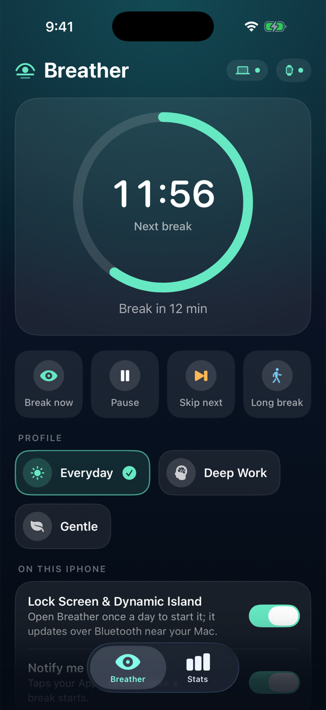
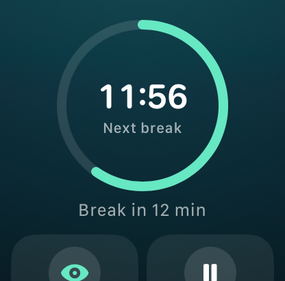

Gentle break reminders that grow out of your MacBook's notch and wait for the right moment. Your eyes rest. Your focus stays.
You're in the flow.
Most break apps interrupt you. Breather waits for you.
A minute before each break, a quiet card grows out of the notch. Start now, snooze, or skip.
On a call, watching a video, presenting or mid-sentence? Your break waits until you're done.
Step away from your Mac and it counts as a break. No nagging the moment you sit back down.
20-20-20 by default, long breaks, office hours and planned breaks like lunch.
Drink water, fix your posture, blink, stand up. Counted on real screen time.
Full-screen and calm, on every display. Make them look exactly how you like.
A daily score, screen time and your longest stretch. All stored on your Mac.
Everyday, Deep Work, Gentle. Switch by hand or automatically by app.
Run Shortcuts and scripts when breaks start and end. Keyboard shortcuts too.
Breather is free software under the GPL-3.0. Read every line, build it yourself, or help shape what comes next. No account. No tracking. No ads.


Pair your iPhone to see each break on the Lock Screen and in the Dynamic Island. Your Apple Watch taps your wrist when it's time to look away.
The companion apps are in beta. Build them from source today.
Yes. It's free and open source under the GNU GPL v3.0. No trials, no subscriptions, no accounts.
Any Mac on macOS 26 Tahoe or later, including macOS 27, with Apple silicon or Intel. On Macs without a notch, alerts appear as a floating pill under the menu bar.
Breather isn't notarized by Apple yet, because that needs a paid developer account. Homebrew and the one-line installer handle it for you. With the DMG, approve it once in Privacy & Security. See the steps.
Only approve apps you trust. Breather's full source is on GitHub, every release is built there by GitHub Actions from the tagged code, and each release lists SHA-256 checksums you can verify.
No. The app has no accounts, no analytics and no ads. Your stats stay on your Mac. The only network request is an optional daily check for new versions on GitHub.
No. Breaks wait while your mic or camera is on, while a video plays, while you share your screen or present, and while you're typing. You choose which of these count.
Breather tells you in the notch when a new version is out. With Homebrew, run brew upgrade --cask breather. Otherwise run the one-line installer again or download the new DMG.
That's macOS's message for apps that aren't notarized, not real damage. Run xattr -dr com.apple.quarantine /Applications/Breather.app, or reinstall with Homebrew or the one-line installer.
Yes, in beta. Breaks show on your Lock Screen and in the Dynamic Island, and your Watch taps your wrist. Build them from source for now.
Quit Breather from the menu bar and move it to the Bin. With Homebrew, run brew uninstall --zap --cask breather to remove its data too.
Free for macOS 26 and later. Apple silicon and Intel.
brew install --cask jals413/tap/breatherOpening it for the first time? macOS asks you to approve it once. Here's how.